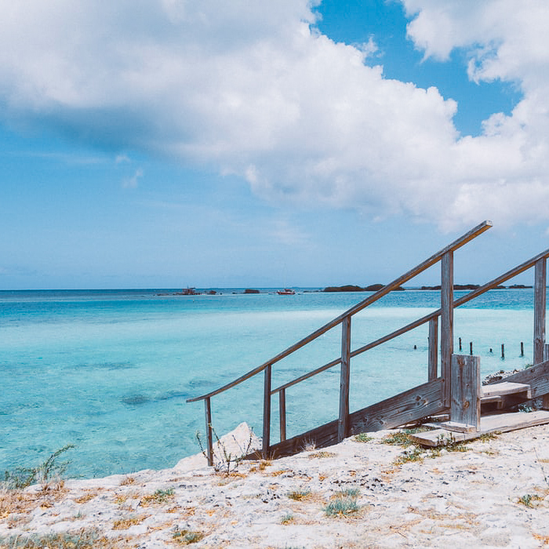

Day 1 → Sopers Hole
Board the ship at the beautiful Sopers Hole, tucked away in the harbour. Spend the day driving through the panoramic sites of the island before descending to Cane Garden Bay for a swim. Spend your afternoon on this charming beach, being waited on by the bar staff.
Day 2 → Gustavia
Arrive at the secluded island of Gustavia, more commonly known as ‘Tiny St. Barts). Soak in the relaxing atmosphere and head into town for a full body massage and spa day. Taste the local cuisine from the boutique inns fringing the island before spending the evening in the ship’s dining hall.
Day 3 → Basseterre
Wake up to the beautiful sights of Basseterre and prepare for a day of pure indulgence. Travel along St Kitts Scenic Railway and enjoy the northeastern coastline of villages and farms. If the ocean is calling your name, dip your feet in for a snorkel adventure or perhaps dive into the Dolphin Discovery facilities to see these beautiful mammals.
Day 4 → Terre-De-Haut
Stroll around the secluded town of Terre-De-Haut and browse through the abundance of sidewalk vendors selling french treasures. Home to authentic rum and chocolate, this township offers a fascinating tour of sensory delight at the local winery. Finish the day with kayaking alongside the alluring sunset.
Day 5 → Castries
Explore the jungle paradise of Castries and discover its wild orchids and tropical birds. Drive through the towering palms and arrive at the stunning Morne Viewpoint for a birds-eye-view of the island. Head down the path and take a dip in La Tille Waterfall for a relaxing swim amongst nature.
Day 6 → Saline Bay
The final day is spent on an idyllic island bursting with art and culture. Walk through the towns and gain a rich cultural experience before heading to the clear beach waters. Relax and unwind in this little slice of paradise and watch the day go by.
